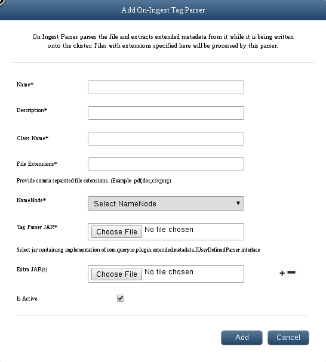

Big data - On Ingest Tagging
In this chapter
Following documents explain On Ingest Tagging:
Description
On Ingest Parser parses the file and extracts extended metadata while it is being written onto the cluster.
Extended metadata refers to the file metadata that is not interpreted by file system. It is used to associate files with some extra information.
Typical usage can be storing the author of a document, the character encoding of a plain-text document, a checksum or digital signature. These metadata about files are saved in the database.
To add on ingest parser to the cluster, navigate to Data > Manage Datasources > Manage Data Tagging view.
Add On Ingest Parser
Use following guidelines to add an On Ingest parser
- Click on Add button in the On Ingest view to add new On Ingest parser.
- Name: Enter name for the parser.
- Description: Provide description for the parser.
- Class Name: Provide main class for the parser.
- File Extensions: Provide file extensions that you want to associate with the parser.
- Tag Parser JAR: Select jar file which has implementation of com.queryio.plugin.datatags.IUserDefinedParser interface. Click on Choose File to browse and select the Tag Parser JAR file.
- Extra JAR(s): You can upload number of dependent jar files, if required.
- Is Active: Check box to activate or deactivate On Ingest parser.
- Click on Add to add the parser.

- All tables related to file extensions will be automatically created. You can see them in Manage Databases.
You can use Query Manager to query the metadata extracted using these parsers.
To see how to write your own parser, refer to the developer documentation
Copyright © 2015 QueryIO Corporation. All Rights Reserved.
QueryIO, "Big Data Intelligence" and the QueryIO Logo are trademarks
of QueryIO Corporation. Apache, Hadoop and HDFS are trademarks of The Apache Software Foundation.